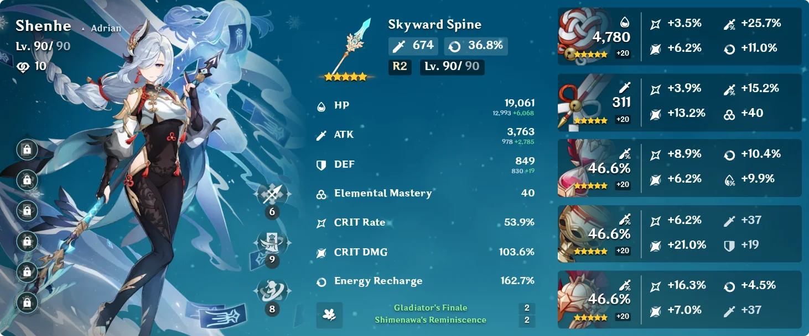
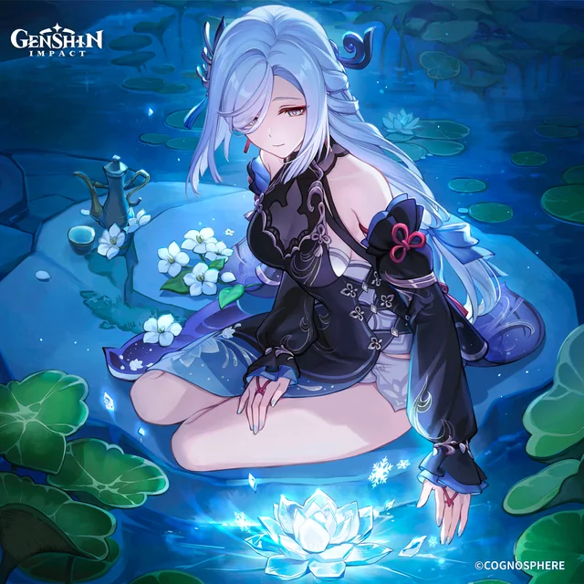
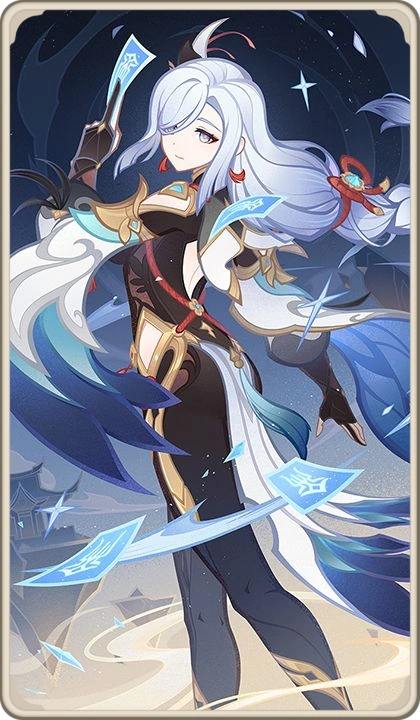
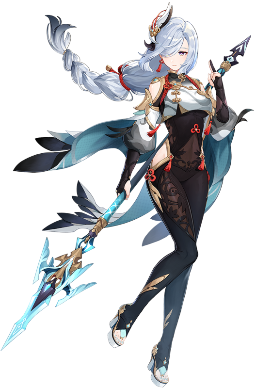

Guide to Building Shenhe

Shenhe is a cyro support character that provides elemental resistance towards enemies which boosts DMG and weakens enemies. To maximize her resistance and damage boosting, you should be prioritizing ATK%. Do not put anything into flat attack; it is a waste of your time. Your second priority should be ER. You do not need any CRIT substats but CRIT RATE would be preferred. Try not to put too much into ER, 120-160% should be sufficient.
What are the Best Affixes for Shenhe?
- ATK%
- CRIT DMG
- ER
- Cyro DMG
How Do I Use Her?
Shenhe is a pretty simple character to play. Depending on your constellations, you use her skill, then ultimate. If you have her c1 and above, double tap her skill, then single use ultimate. If you're having trouble noticing a difference with her on the team, you might want to double check that her talents are properly leveled up. You only want to focus on getting her skill and ultimate to level 8 or above. The higher the talent, the better her skills. I would recommend stopping at 8 to preserve resources.



More information about Shenhe's build and gameplay strategies can be found below:
shenhe build